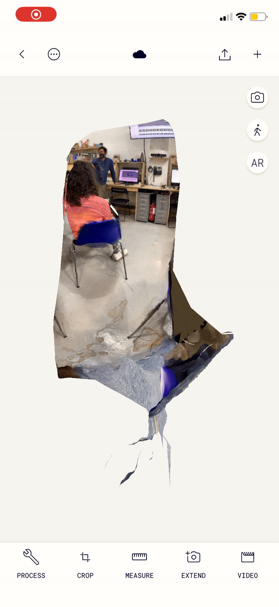
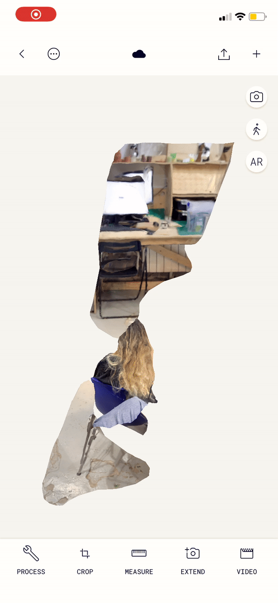
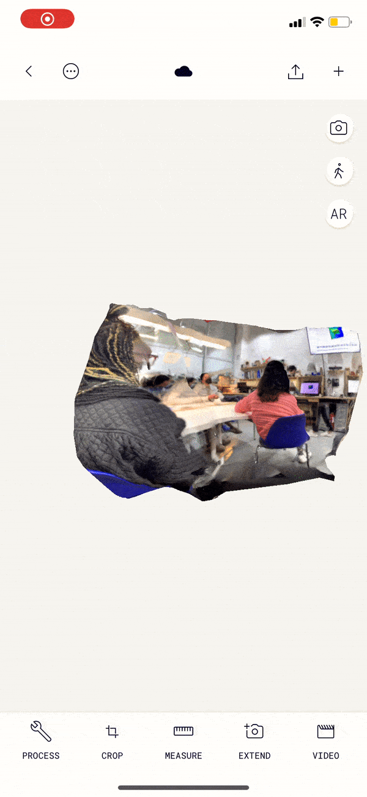
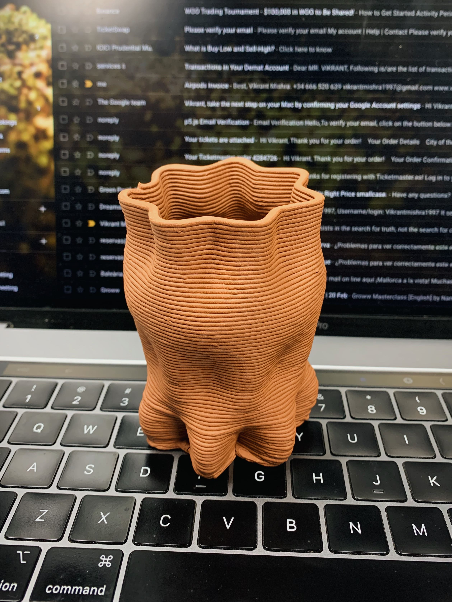
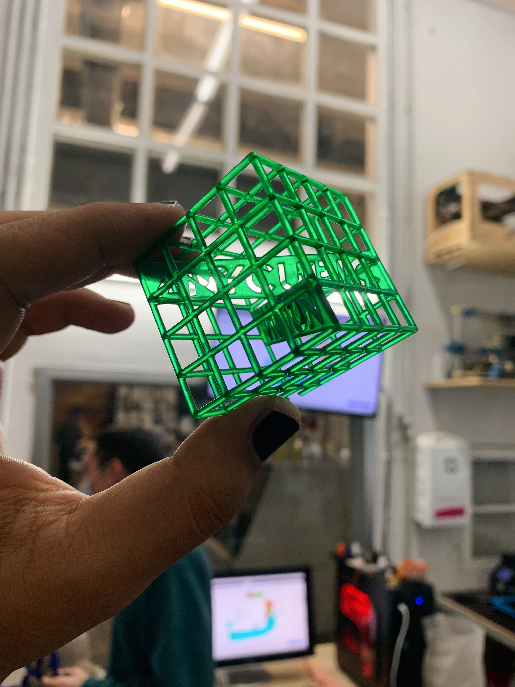
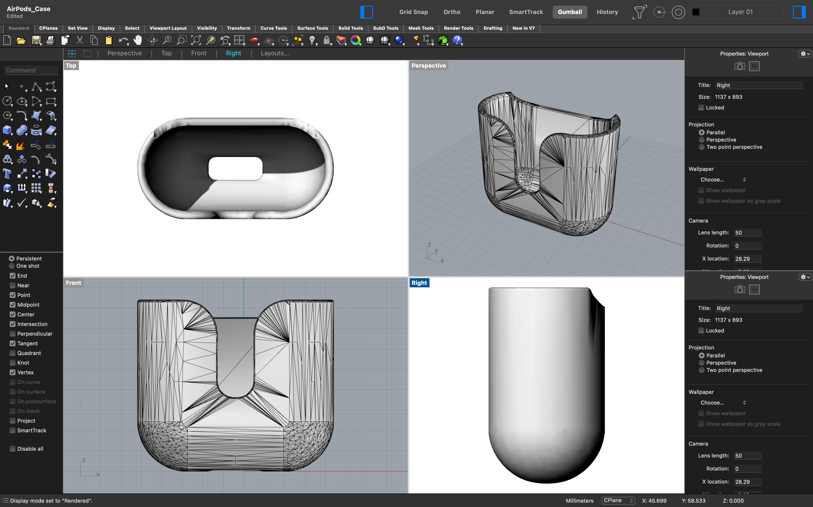
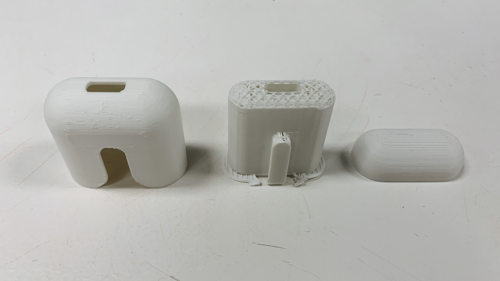
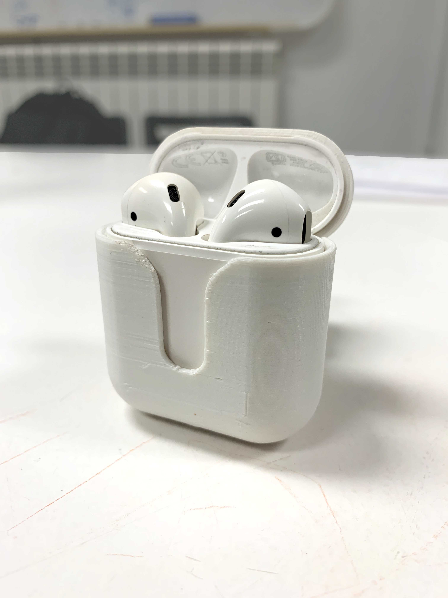

WEEK V
3D Printing & Scanning
The fifth week introduced the most fetishised technique of fabrication in the industry. Design ethics around patents and distributed design were discussed to understand the politics and revolution instigated by techniques like 3D printing and laser-cutting. In the grand scheme of Industrialisation and fabrication, these techniques have only become easily accessible and free to use recently.
Various techniques and devices with LiDAR sensor like X-box Kinnect were explored to introduce 3D scanning. A few free softwares are available on phones that do the same job but in much lower resolution depending on the device. The new iPad apparently house a LiDAR sensor that can be used to high-resolution scanning. Within the premises of the classroom, we tried scanning a student to see how definite the results were and they were not precise. Many factors like lighting, parabolic movement and even the setting itself contribute to how clean or precise the scan is.
To explore various alternatives, certain applications on the phone were utilised too, to scan parts of classroom environments. A few of those not-so-precise scans can be found below. The application that was used for this, was PolyCam.



Fig. 5.1 A few of the materials that were unique, non-traditional and caught the attention were clay, resin and potato mash (left to right)
For the 3D printing assignment, I explored and experimentation using the flexible TPU (fila-flex) and PLA filament for an Air-pods case. The sample with the flexible TPU didn't work out well because of the errors related to temperature leading to a very loose fit. The sample with PLA worked well in terms of durability, rigidity and structure. The process helped in learning how printing speed and temperature influence the outcomes majorly.

